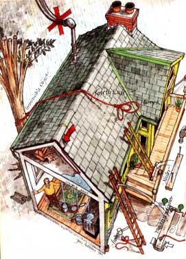
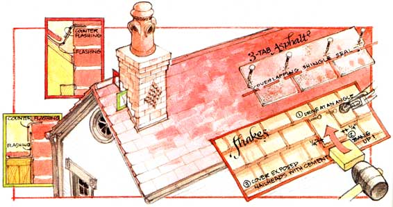
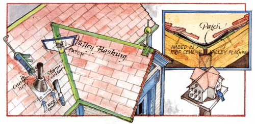

Peaks, fields,. valleys, hips, rakes, eaves and flashing:not just words, but the anatomy of your roof
THE PATTERN IS ALWAYS THE SAME. You find a pot, put it under the leak, and watch it drip. If you're smart, you immediately try to contain the water in the attic, using buckets and plastic sheets. If that's not possible, you get to poke a large hole in the ceiling, so water won't collect and spread to form more leaks elsewhere; a shower of filthy water will reward your efforts. Inevitably, you'll begin to get very depressed.
A leaking ceiling means not just a leaky roof, but a failed roof system. That's even worse. Doubt it not, the largest component of your house is a system, comprised of subsystems-peaks, fields, valleys, hips, rakes, eaves and flashing-each of which must be absolutely waterproof everywhere all the time. Any little subsystem failure can make it water-permeable. Historically, from the time of thatched roofs to the present day, this has been an unsolvable bummer. There is no such thing as a one-piece roof.
There are two types of roofs: flat and pitched; and three main types of roofing: built-up, shingle and tile. Flat roofs use tar and gravel, built up in layers (hence the name), while pitched roofs are covered by shingles made from asphalt, wood, slate, fiberglass, tile, handhewn shakes or other materials. Given cause, they will all leak.
As you watch the pot fill, it occurs to you that you have no idea where in hell the leak originates. Unless it was caused by a meteor, a chunk of frozen blue airline toiletwater or a stray hunting arrow, nothing will be marking the hole. So, at this point, the source of your problem is unknown-and sure to get worse. Your depression intensifies.
In this mood, many otherwise careful people immediately vault onto their houses, sometimes in the middle of the night, to find and fix leaks, forgetting that even on the happiest day, the roof is not a safe place to be: It can easily injure or kill them. You think you're in a bad mood now? Don't make these the last words you'll ever read.
Here are a few life-and-death tips. Don't go up on any roof when it's wet, icy, covered with snow, or during the hours of darkness. Don't climb a questionable ladder: one that's too short, too old or wobbly, or an extension ladder too hastily set up. Wear a safety line and harness-as reasonable a precaution as car seat belts. Stay far away from wiring and electrical masts. Don't use any ladder as a work platform; use a scaffold instead. The extra cost is a pittance compared to rewiring your spinal cord.
If you consider the above unnecessarily cautious, let me point out that I've witnessed seven falls from ladders and roofs. Four of the individuals came away with broken bones or severe sprains; three required hospitalization. One was unhurt-he was wearing a safety line and harness.
Like medicine, fixing a leak requires diagnosis and treatment, in that order. So let's find the leak first. You won't need tools for the first inspection.
But you will need to get on the roof. Set up an extension ladder the same way you'd pack your own parachute, i.e., slowly and perfectly. Ideally, you'll use an industrial grade ladder, with big feet and sturdy rungs. The bottom should be rock-solid stable, and preferably secured. The top must be secured. Use a three-foot wooden block to keep the gutter from collapsing. Safe on the ground, fasten two eyebolts to the block, then climb up and stick it into the gutter behind the ladder.Run rope through the eyebolts and the top of the ladder.In all likelihood, you'll be making several trips up and down the ladder.
When the ladder is safely immobile, and you've checked the rung locks one last time, climb up carefully to make a visual inspection. If you have to leave the ladder and get onto the roof, don't spend a lot of time standing on the gable rakes or eaves; these are the least supported parts of the roof system.
As you scan the roof, don't overlook the obvious: missing shingles or tiles, popped nails, rusted flashing, tree branches, bullet holes, cracked or blistered asphalt (flat roofs, ice dams or cracked shakes. If any of these are directly above, or uphill from, the point where the ceiling leaks, you won't need Sherlock Holmes to locate the problem.
But if you can't find anything, look in the attic; bring a flashlight and a bucket, and wear gloves. Move the soggy insulation aside. Examine the underside of the roof system directly over the ceiling leak. No luck? Turn off the flashlight and pray for visible anomalies, such as daylight; a tiny pinprick will show up like a laser. If you don't see anything, check for the highest water stains on the sheathing or rafters. Water runs downhill, so your leak might conceivably start as high as the peak and slither down the rafter to vex you with a mislocated drip.
If all else fails, have someone turn on a garden hose and douse the suspected area while you wait patiently inside. It may take a long time, but eventually you'll see water merrily cascading down into the bucket you wisely brought along to protect your living quarters.
Still can't see where it's coming from? Your last and most expensive resort is to mix any water-soluble fluorescent dye in at least five gallons of water, douse the roof with the liquid, and use an ultraviolet light to spot its origin when it drips into the attic. Don't do anything suicidal, like trying to carry the bucket up the ladder; use a small rental pump to push it up the hose.
Two words about fixing a tile roof yourself. Forget it.
Leave this to the experts. In the first place, most tile-roof systems are guaranteed for decades; in the second place, such roofs usually leak in places you can't reach from scaffolding, and untrained feet clomping on a tile roof will crack more tiles. Have all repairs done by experienced professionals-that means those with references. You can save them time, and yourself some money, by locating the leak from below, but otherwise, stay put.
Flashing is the probable culprit if your leak is near a chimney, valley or plumbing vent. Look for corrosion on the first two and broken seals on the last. On a brick chimney, mortar can crumble away from flashing or counterflashing (flashing inset in the mortar joint to lap over the brick flashing. A visual examination will tell you if you need to put everything back in place with roofing cement.
THE PROCEDURE for chimney-flashing repair is simple. Use a wire brush to clean out loose mortar and rust, and then trowel roof cement liberally over any suspect area. You can use a caulk gun to put the cement in place, but only a trowel can spread it properly.
To repair a rusted-out valley, use tin snips to cut a patch big enough to slide at least two inches under the shingles on both sides out of flashing metal. Bend it to conform to the valley, fit it in place, take it back out. Apply a thick coat of roofing cement to the valley, and imbed the patch in it. Put more cement on the top and bottom edges of your patch. After that, start saving up money, because if your valley flashing is that far gone, the odds are good that you need a new roof.
Plumbing vents can go wrong in three places: the rubber or metal collar around a pipe, the nails securing the flashing and the flashing itself. Use a putty knife here to smear good old roof cement on everything but the collar. For that, use Butyl rubber or silicone caulk, and really force it into the joint with a wet finger.
A damaged asphalt shingle in the field (that is, out in the middle of everything rather than wrapped around flashing or chimneys or woven into valleys is a gift from heaven compared to some problems. There it is, cause and cure tied up in a neat bundle, especially after you buy a bundle of matching shingles from your local supplier.
Using a putty knife, gently break the seal of the shingle that laps directly over the damaged one. You don't want to rip it, because you're going to have to reseal it when you're done, so go slowly. The nails securing the damaged shingle are hiding under it; use a flatbar to remove them. (There should be four; save them all. Discard the bad shingle. Slide your new replacement shingle up and nail it into place. Now hit each nail head with a dab of roofing cement, and glue down the bottom of the pried-up shingle above it. You broke the seal, remember?
That was too easy. And yet most shingle repair, be it asphalt, wood or slate, follows the same rules and steps; Separate and isolate the bad shingle from those around it, remove the nails, slide out the bad shingle, and replace. Wood shingles, shakes and slate require that you cut the nails with a hacksaw rather than remove them, and renail in a relatively exposed spot; but in all cases, you use roof cement to seal those nailheads. Even if a damaged shingle is not conveniently in the field, but lives instead in a peak, valley or vent, the procedure remains basically the same: isolate, detach, remove, replace, reseal.
One place where extra caution must be used is at any shingle/flashing interface. For instance, a shingle along a valley can't be nailed too close to the flashing for fear of puncturing it; use roofing cement at the flashing end, and nails at the other end. If a shingle goes under a piece of step (sometimes called lea flashing, be extra careful not to disturb the flashing-at all. You can enlarge a small leak to a major waterfall here. Unless you're really experienced, this is one of those times to consult an expert.
Once you've determined the leak's location, a built-up flat roof practically fixes itself. At least you're not playing mountain goat on a steep pitch. The area needing repair usually sits directly above the ceiling leak. And it's probably a nice, sunny day, because flat roofs are most often found in warm climates with no snow-load factor.
First, sweep away the gravel down to the tar. Hole? Patch it with fiberglass or metal screen. Blister? Cut it away. Vent? Look for cracks. Then coat the area with roofing cement, use a trowel to sweep the gravel back in place, make sure the roof drain isn't plugged, and you're done.
LIFE SHOULD BE SO GOOD. And yet perhaps you've read this far and are cursing hard, because none of the preceding seems to apply to your leaky roof. You've checked the flashing, the eaves and every square inch of your roof, and the leak is close to an outside wall, but the overhang appears to be in good shape. In fact, you can't make the leak reappear with a garden hose; it only occurs during natural rainstorms.
Check your soffit vents, underneath the eaves. Wind can, and does, make water violate the downhill rule. It can drive rain swiftly into a soffit vent, and the water will collect against the wall. Feel the soffit for moisture. Is it damp? If the vent's causing your leak, move it to another location, and repair the resulting hole in the soffit.
No question about it: The maddening task of curing a leaky roof can, in mid-job, make you want to take off your safety line and hurl yourself off your own parapet, especially if you were sure you had it fixed four previous times. When exasperation strikes, put down your tools, take a deep breath and look around. Honestly, isn't it a wonderful view from up there? Isn't it nice to be all alone, way up high? Aren't you grateful, in these hard times, that you have a roof over your head to fix?
|
 |
 |
 |